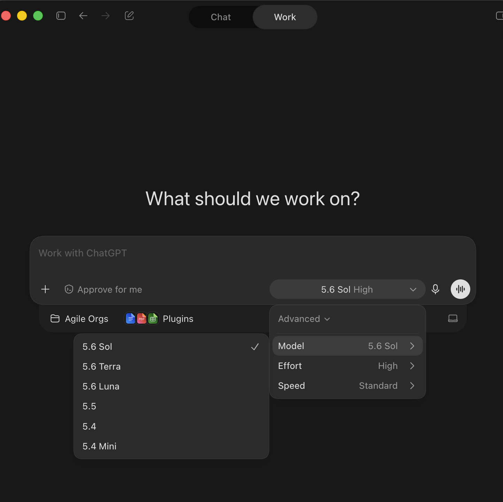
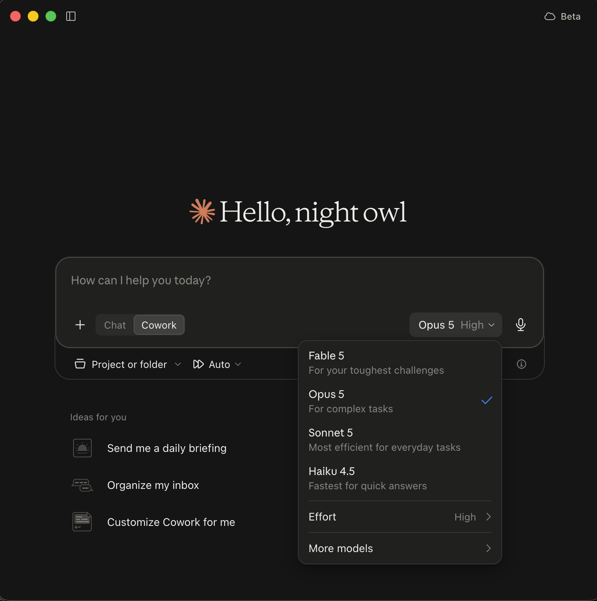
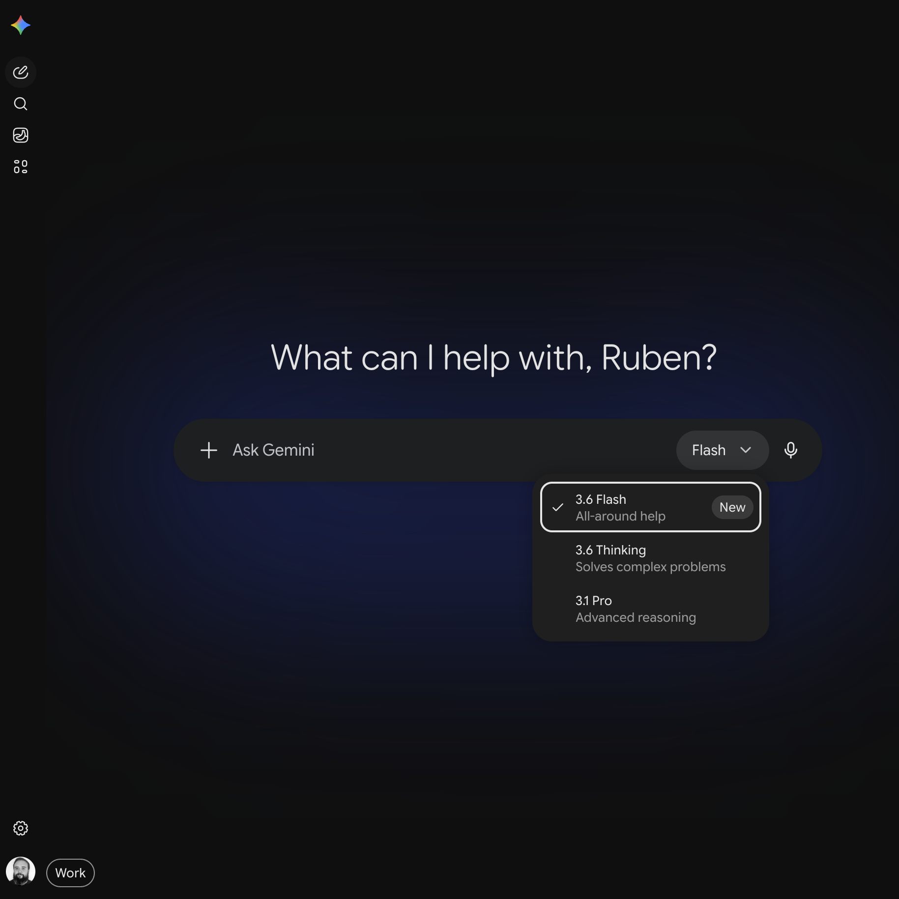

Universidad de Chile · Departamento de Ingeniería Industrial
IN3143 · Escritura académica para las ingenierías y las ciencias
Sesión IA-1 · 20 de agosto de 2026
Prof. Rubén Daza
Hoy
Aprender a clasificar las fallas de un texto escrito por IA: factualidad, fuentes, progresión, genericidad.
Vas a practicar con dos textos generados por un modelo y publicados tal como salieron: un ensayo y la discusión de un informe de laboratorio.
Las cuatro sesiones de IA
| Sesión | Qué aprendes | Cuenta para |
|---|---|---|
| IA-1 · hoy | Detectar y clasificar fallas de un texto generado discernment | Declaración del borrador |
| IA-2 | Decidir qué le delegas al modelo y qué haces tú delegation | Planificación (S5) · declaración 1 |
| IA-3 | Especificar el encargo: criterios para dirigir y auditar description | Borrador (S7) · declaración 2 · 5% |
| IA-4 | Aceptar, corregir o rechazar lo que el modelo propone diligence | Texto final (S14) · declaración 3 · 7% |
Las competencias en inglés son las 4D del marco AI Fluency (Anthropic, 2025). El trabajo en clase de estas cuatro sesiones suma además el 10% de participación.
La regla del ensayo
El ensayo evalúa tu escritura. Por eso la primera versión completa, la que entregas la semana 7, sale de tu redacción, sin párrafos generados.
Cómo trabajamos en estas sesiones
link también en U-Cursos
| nombre | falla 1 | falla 2 | falla 3 | par: la más discutida | exit ticket |
|---|---|---|---|---|---|
| tu nombre → | capa N: "cita" — por qué |
Encuesta 3 min
Ocho preguntas: qué herramientas de IA usas y con qué tipo de cuenta.
Con esto sabemos con qué herramientas y cuentas llega el curso, y ajustamos las guías y actividades a ese acceso.
No influye en ninguna nota. El link queda también en U-Cursos.
Panorama 2026 · vocabulario
| El modelo | El motor que genera el texto: GPT-5.6, Claude Sonnet 5, Gemini 3.1. Define la capacidad: qué tan bien razona, cuánto inventa. |
| El producto | La aplicación donde conversas: ChatGPT, Claude, Gemini. Suma memoria, archivos, búsqueda. |
| El arnés | Las herramientas que el producto le presta al modelo: buscar en la web, leer tus archivos, ejecutar código. |
Dos personas «usando ChatGPT» pueden estar usando motores muy distintos. El selector de modelo importa.
Panorama 2026 · los modelos
Regla práctica: tarea difícil o ambigua → frontera con razonamiento. Tarea mecánica → el modelo rápido.
Panorama 2026 · el material de trabajo
La oferta · OpenAI

La oferta · Anthropic

La oferta · Google
La encuesta pregunta si tu cuenta U. de Chile trae Gemini habilitado.

La oferta · personalización
En los tres productos puedes empaquetar instrucciones y archivos en un asistente que se reutiliza y se comparte:
| GPT personalizado ChatGPT | se comparte por link; las cuentas gratis pueden usarlo |
| Gem Gemini | un Gemini con instrucciones fijas que alguien definió |
| Project + Skills Claude | instrucciones y archivos que cargas una vez para tu propio uso |
En IA-2 vas a recibir uno armado para este curso: un evaluador cargado con la rúbrica del ensayo.
Panorama 2026 · pedirle cosas a un modelo
Por qué: el modelo ya razona por pasos y ya adopta el rol que la tarea pide, sin que se lo digan. Medido en 2026 (Wharton): sin efecto en la calidad.
Especificar el encargo es la competencia de la sesión IA-3.
Las tres configuraciones del curso
| Configuración | Dónde vive tu proyecto | Cuenta gratuita |
|---|---|---|
| Notebook en NotebookLM | Cubre el curso completo | |
| ChatGPT | Proyecto en ChatGPT | Cubre el curso, con tope diario |
| Claude | Proyecto en Claude | Cubre el curso, con tope diario |
Las tres cubren el curso en versión gratuita. Eliges una y la mantienes el semestre: tu proyecto va acumulando el material del ensayo. Las tres guías de instalación quedan en U-Cursos.
Qué se sube y qué no
Usar IA en el curso está permitido y se declara: Instructivo N° 17/2026.
El ensayo 10 min
«Automatización y empleo: una relación compleja». Se lo pedimos a Gemini 3.5 Flash como lo pediría un estudiante apurado: 11 mensajes, sin verificar nada. Está publicado tal cual salió.
Tu tarea: léelo completo y anota todo lo que te haga dudar — una cifra, una cita, un salto del argumento, una frase que no dice nada. Todavía no clasifiques: junta sospechas.
rubendaza.github.io/in3143-ia/ensayo-ejemplo/Las cuatro capas de fallas
¿Los hechos y las cifras son ciertos?
¿Las referencias existen, y dicen lo que se les atribuye?
¿El argumento avanza, o el texto da vueltas?
¿Podría estar en cualquier ensayo sobre cualquier tema?
Orden de revisión: primero lo que se puede verificar (1 y 2), después lo que exige juicio (3 y 4).
Clasificar · individual 12 min
De tus sospechas, elige las tres más fuertes. Cada una va en tu fila de la planilla como una línea, con este formato:
Ejemplo · capa 2: "según la OCDE (2023), un 12%..." — el informe citado no aparece en el catálogo de la OCDE
Si una sospecha podría ir en dos capas, elige una y anota la razón. Esos casos se discuten en el paso siguiente.
Defender la clasificación · en pares 10 min
Con la persona de al lado, por turnos:
Revisión en conjunto 12 min
Miramos algunas filas de la planilla entre todos. Por cada falla, dos preguntas:
Después, un evaluador de IA revisa las mismas filas. A su veredicto le aplicamos las mismas dos preguntas.
Cómo se fabricó este ensayo
El chat completo tiene 11 mensajes. Cinco de ellos, tal cual:
mensaje 1 · el usuario: "hola, tengo que hacer un ensayo para un ramo..."
mensaje 6 · el usuario: "oye la parte anterior me quedo media corta, mejorala"
mensaje 8 · el usuario: "ponle cifras y estadisticas para que se vea mas serio"
mensaje 9 · el modelo advierte: "tres de estas fuentes no las verifiqué — revísalas antes de entregar"
mensaje 10 · el usuario: "perfecto, ahora juntame todo"
La advertencia del mensaje 9 quedó sin respuesta: el mensaje siguiente pidió juntar todo, y así se entregó. Entre las fuentes del ensayo hay dos organismos que no existen y un DOI inventado.
El mismo análisis, en otro género
Sección de discusión de un informe de laboratorio, generada por IA:
Discusión. Los resultados obtenidos confirman el comportamiento esperado del material y validan el procedimiento experimental. El módulo de elasticidad calculado (E = 310 GPa) se encuentra dentro del rango típico reportado para aceros estructurales (Callister y Rethwisch, 2014). La diferencia del 12% respecto del valor nominal puede atribuirse a múltiples factores, tales como condiciones ambientales, errores de medición o variabilidad propia del material. El ensayo se realizó según la norma ASTM E8/E8M, lo que garantiza la confiabilidad de los resultados. Asimismo, como demuestra García et al. (2019) en su estudio sobre probetas de acero AISI 1045, la velocidad de deformación no afecta significativamente los resultados obtenidos. En conclusión, los resultados confirman el comportamiento esperado del material y validan el procedimiento experimental empleado.
generada por IA para esta actividad
Exit ticket 5 min
Sobre este párrafo: clasifica dos fallas en la última columna de tu fila, mismo formato de una línea. Hay más de dos.
Aviso: el párrafo mezcla referencias reales con inventadas. No marques por marcar.
El texto está en rubendaza.github.io/in3143-ia/informe-ejemplo/
Cierre
Un texto generado se revisa en cuatro capas: factualidad, fuentes, progresión, genericidad. El ensayo y el informe de hoy fallaron en las cuatro.
Antes de IA-2